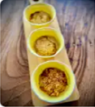
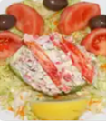
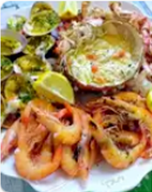
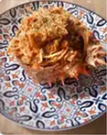
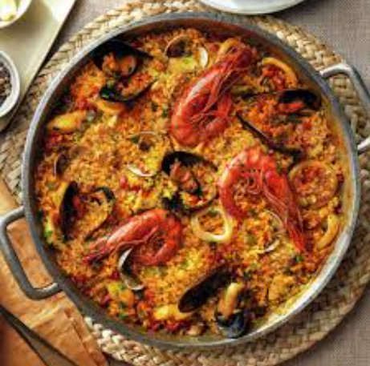
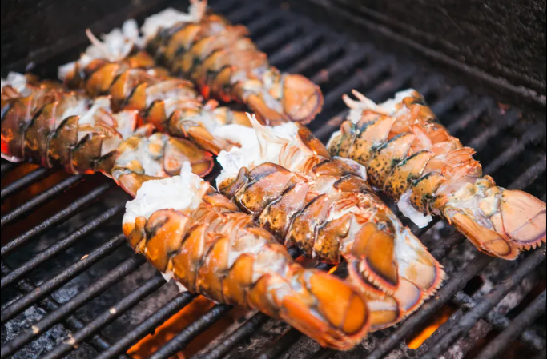

huevos cocidos · palitos de cangrejo · mejillones al natural escurridos · berberechos al natural escurridos · mayonesa · nata para cocinar · sal · cucharitas comestibles
👤 Berta Álvarez

Crema de centolla con crujiente de pan
Centollas cocidas · Cebollas medianas · Leche entera con calcio · Maicena · Sal · Pimienta negra · Nuez moscada · Aceite de oliva virgen extra · Pan rallado (previamente tostado)
⏱ 50 minutos (+ tiempo de extraer la carne) 🍽 8-10 Comensales
👤 Arianne

Palta rellena con salpicón de centolla
carne de centolla cocida · cebolla morada cortada en cuadraditos · pimiento morrón cortado en cuadraditos · apio cortado en cuadraditos · cilantro picado · mayonesa · mostaza a la piedra
⏱ 30 minutos 🍽 2 raciones
👤 Jon Michelena
Empanadas de chupe de centolla con camarones
ingredientes para el relleno · carne de centolla cocida · camarones descascarados, desvenados, cortados en trocitos · mantequilla sin sal · cebolla cortada en cuadraditos
⏱ 2 horas 🍽 14-15 raciones
👤 Jon Michelena

Mariscada de crustáceos y centolla rellena
centolla viva de 1 kilo y medio aproximadamente · conchas finas vivas · gambas frescas grandes · limones y medio medianos · ajos muy gruesos · perejil fresco no muy fino
🍽 4 personas
👤 Alexis Urrutia

Spaghetti con carne de centolla
Centollas (hervidas) · Spaghetti · Cebollas (en daditos) · ajo (en daditos) · Concentrado de tomate · Brandy · Estragón · ~10 Tomates cherry (partidos por la mitad) · Aceite de oliva
⏱ 40 minutos (+ tiempo centolla) 🍽 4 Comensales
👤 Arianne

Paella de mariscos tradicional
Arroz bomba · gambas frescas · mejillones · almejas · calamares · azafrán · pimentón dulce · caldo de pescado · aceite de oliva · ajo · tomate rallado
⏱ 1 hora 15 min 🍽 6 personas
👤 Chef María

Langosta a la parrilla con mantequilla
Langostas frescas · mantequilla · ajo picado · limón · perejil fresco · sal · pimienta negra · aceite de oliva virgen extra